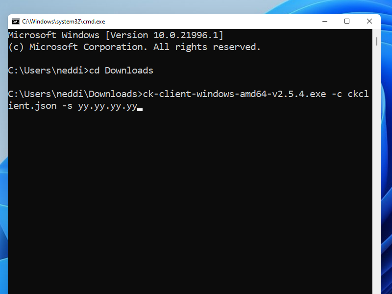

Shadowsocks + Cloak
Cloak disguises a proxy or VPN server as a web server in order to evade deep packet inspection (DPI). The disguised server secretly implements Shadowsocks, OpenVPN, or Tor.
In this article, we deploy Shadowsocks and Cloak on a Debian 10+ server, with a camouflage website running on Nginx. Before you set up your server:
- You will need a domain name, either free or paid
- You will need to create a DNS
Arecord pointing from your server hostname to your server’s IP address
In the examples in this article, we give the server host name as www.yyyyy.xyz and the server IP address as yy.yy.yy.yy.
If your server or client runs a recent version of Ubuntu, the procedures will be very similar to those for Debian 10+.
We end the tutorial by describing the procedure for setting up a Windows client.
1. Set Up Camouflage Web Server
1.1. Open Firewall
Firewalls are typically implemented with nftables, iptables, ufw, firewalld, or security groups. Whichever one you are using, you will need to open ports 80 and 443 for TCP input and persist your changes across reboots.
For example, if you are using nftables with a policy of drop on Debian 10+, the commands would be:
nft add rule inet filter input tcp dport { http, https } counter accept
nft list ruleset > /etc/nftables.conf
If you are using nftables, then enter the commands above. If you are not using nftables, then make the equivalent changes for your firewall.
1.2. Implement BBR
Bottleneck Bandwidth and Round-trip propagation time (BBR) is a TCP congestion control algorithm developed at Google. Under certain types of network congestion, it will improve your latency. Implement BBR TCP congestion control on your server with the following commands:
cat >> /etc/sysctl.d/50-bbr.conf <<EOF
net.core.default_qdisc=fq
net.ipv4.tcp_congestion_control=bbr
EOF
sysctl -p /etc/sysctl.d/50-bbr.conf
1.3. Install Nginx
Install the Nginx web server on your server:
apt update && apt upgrade -y
apt install nginx -y
1.4. Configure Nginx
We want to make the Nginx web site look as much as possible like a realistic production server. Therefore edit the main Nginx configuration file:
vi /etc/nginx/nginx.conf
Uncomment the line:
server_tokens off;
Save the main Nginx configuration file. Then edit the default site definition file:
vi /etc/nginx/sites-available/default
Insert the real server name, which in our example is www.yyyyy.xyz:
server_name www.yyyyy.xyz;
Immediately below that, insert lines that will allow only expected HTTP request methods:
if ($request_method !~ ^(GET|HEAD|POST)$ )
{
return 405;
}
Also add a line to provide some realistic browser caching:
expires 1h;
Save the default site definition file. Restart Nginx for all your changes:
nginx -t
systemctl restart nginx
1.5. Add Camouflage Content to Web Server
Add a few realistic webpages to your camouflage site. Here is an example of how you might do that. You can add different content if you have some.
apt install wget zip unzip -y
wget https://github.com/arcdetri/sample-blog/archive/master.zip
unzip master.zip
cp -rf sample-blog-master/html/* /var/www/html/
At this point, you can test to see if your host name resolves to your IP address by opening a browser on your PC and visiting the HTTP version of your site. Using
our example of a host named www.yyyyy.xyz, that would be:
http://www.yyyyy.xyz
1.6. Add SSL Certificate to Web Server
Now we make the site accessible by HTTPS on port 443, following the instructions for Nginx and Debian 10 on the Certbot website.
apt install certbot python-certbot-nginx -y
certbot --nginx
certbot renew --dry-run
You now have a working HTTPS camouflage website with a few sample pages on it. Test this by opening a browser on your PC and visiting the HTTPS version of your site. In our example, that would be:
https://www.yyyyy.xyz
2. Install Shadowsocks on Server
2.1. Generate Password
Generate a strong password for Shadowsocks:
openssl rand -base64 24
You will receive a 192-bit password, expressed as 32 base-64 characters, which looks like this:
IMC/Coe/bkfXQw7nvqqCm3Q/RBGgp1j2
2.2. Install Shadowsocks-Libev
Use the Teddysun script to install Shadowsocks-Libev on the server:
wget https://raw.githubusercontent.com/teddysun/shadowsocks_install/master/shadowsocks-libev-debian.sh
chmod +x shadowsocks-libev-debian.sh
./shadowsocks-libev-debian.sh
- When asked to input the password, enter your generated strong password, which in our example is
IMC/Coe/bkfXQw7nvqqCm3Q/RBGgp1j2 - When asked to enter a port, enter
8388 - When asked to choose a cipher, enter
3, which stands foraes-128-gcm - Press any key to run the script, or Ctrl+c to cancel
The script downloads, compiles, configures, and runs the software. At the end of the script, it displays some confirmation messages:
Congratulations, Shadowsocks-libev server install completed!
Your Server IP : YY.YY.YY.YY
Your Server Port : 8388
Your Password : IMC/Coe/bkfXQw7nvqqCm3Q/RBGgp1j2
Your Encryption Method: aes-128-gcm
The script places the configuration in /etc/shadowsocks-libev/config.json. The Shadowsocks binaries are in /usr/local/bin. The executable
ss-server is already running in the background and listening on port 8388.
3. Install Cloak on Server
3.1. Move HTTPS Site to Port 8443
Right now, Nginx is listening on ports 80 and 443. We’re going to make Cloak listen on port 443, so we’ll move Nginx and make
it listen on port 8443 instead.
Edit the Nginx default site definition file:
vi /etc/nginx/sites-available/default
Change the lines that make the SSL server listen on port 443 to make it listen on port 8443:
listen [::]:8443 ssl ipv6only=on; # managed by Certbot
listen 8443 ssl; # managed by Certbot
Save the default site definition file. Restart Nginx to make this change take effect:
systemctl restart nginx
3.2. Download Cloak
Open a browser on your PC and visit the GitHub Cloak releases page. Determine the version
number of the latest release. For example, right now it is 2.5.4.
On your server, download the latest binary for 64-bit Linux:
wget https://github.com/cbeuw/Cloak/releases/download/v2.5.4/ck-server-linux-amd64-v2.5.4
Copy the binary into a directory in your path with the name ck-server:
cp ck-server-linux-amd64-v2.5.4 /usr/local/bin/ck-server
Make ck-server executable:
chmod +x /usr/local/bin/ck-server
Allow Cloak to bind to privileged ports (i.e. TCP/IP port numbers below 1024):
setcap CAP_NET_BIND_SERVICE=+eip /usr/local/bin/ck-server
3.3. Generate Public-Private Key Pair
Generate a public-private key pair:
ck-server -k
The public key and private key are delivered, separated by a comma. Here is an example of what the result might look like:
eRx9vO3x8i1hJ9PucrnlUsN74J/g7MPLymUJCrrQJVM=,MF2tHiGXjP3P3fIIxjt02un2G0qtXdbArmrWsTfz7FM=
- The base-64 string before the comma is the public key, to be given to users
- The base-64 string after the comma is the private key, to be kept on the server
3.4. Generate Administrator Id
Generate a secret identifier for the administrator like this:
ck-server -u
It will produce a base-64 string that looks like this:
SI6bHNp9+Mlc0+/LxhhYig==
3.5. Generate User Id
Generate an identifier for an ordinary user. We will make this user have no bandwidth or credit limit restrictions.
ck-server -u
The command will produce a base-64 string that looks like this:
lNEQtGxl6BgYmVg9N5kBRA==
3.6. Configure Cloak
For your reference, there is a sample configuration file on GitHub.
Create a directory for Cloak:
mkdir /etc/cloak
Edit your server’s configuration file for Cloak:
vi /etc/cloak/ckserver.json
Insert contents like the example below, substituting in your user id, private key, and administrator id:
{
"ProxyBook": {
"shadowsocks": [
"tcp",
"127.0.0.1:8388"
]
},
"BindAddr": [
":443"
],
"BypassUID": [
"lNEQtGxl6BgYmVg9N5kBRA=="
],
"RedirAddr": "127.0.0.1:8443",
"PrivateKey": "MF2tHiGXjP3P3fIIxjt02un2G0qtXdbArmrWsTfz7FM=",
"AdminUID": "SI6bHNp9+Mlc0+/LxhhYig==",
"DatabasePath": "/etc/cloak/userinfo.db",
"StreamTimeout": 300
}
ProxyBooktells Cloak where to forward authenticated proxy traffic to, which for us is Shadowsocks on port8388BindAddris a list of addresses Cloak will bind and listen to, which for us is443BypassUIDis a list of UIDs that are authorised without any bandwidth or credit limit restrictionsRedirAddris the redirection address when the incoming traffic is not from an authenticated Cloak clientPrivateKeyis the static curve25519 Diffie-Hellman private key encoded in base-64AdminUIDis the user id of the admin user in base-64DatabasePathis the path touserinfo.db(ifuserinfo.dbdoesn’t exist in this directory, Cloak will create one automatically)StreamTimeoutis the number of seconds of no sent data after which the incoming Cloak client connection will be terminated
Save the Cloak server configuration file.
3.7. Configure Systemd for Cloak
Create a systemd service file, so that we can make Cloak start after every reboot and run continually as a service:
vi /usr/lib/systemd/system/cloak.service
Insert contents like this:
[Unit]
Description=Cloak Server
After=network.target
[Service]
Type=simple
ExecStart=/usr/local/bin/ck-server -c /etc/cloak/ckserver.json
Restart=on-failure
[Install]
WantedBy=multi-user.target
Save the file.
3.8. Run Cloak
Make Cloak start after every reboot and run continually as a service:
systemctl enable cloak
systemctl start cloak
Check the status of the Cloak service:
systemctl status cloak
The above command should show that Cloak is active (running). Type q to quit the status display. Check what is listening on port
*443:
ss -tulpn | grep 443
The above command should show that:
- Cloak (
ck-server) is listening on port 443 - Nginx is listening in port 8443
Your work on the server is done for now, so exit your SSH session with the server:
exit
3.9. Check from PC
From your PC, check what an unauthorized visitor to your server would see. In our example, the address to put into your browser would be:
https://www.yyyyy.xyz
You should see an ordinary looking website.
4. Set Up Windows Client
Now work on your PC, which in this tutorial is running Windows.
4.1. Download Cloak Client
In your browser, visit GitHub and determine the latest version of Cloak. We will use version
2.5.4 as our example.
Download ck-client-windows-amd64-v2.5.4.exe from GitHub to your PC’s Downloads directory.
4.2. Configure Cloak Client
For your reference, there is a sample client configuration file on GitHub.
In the Downloads folder, create a client configuration file for Cloak named ckclient.json. You can use Notepad or Notepad++ to edit the
file. Insert contents like the example below, substituting in your UID, PublicKey, and ServerName:
{
"Transport": "direct",
"ProxyMethod": "shadowsocks",
"EncryptionMethod": "plain",
"UID": "lNEQtGxl6BgYmVg9N5kBRA==",
"PublicKey": "eRx9vO3x8i1hJ9PucrnlUsN74J/g7MPLymUJCrrQJVM=",
"ServerName": "www.yyyyy.xyz",
"NumConn": 4,
"BrowserSig": "firefox",
"StreamTimeout": 300
}
Transportcan be either direct or CDNProxyMethodis the name of the proxy method you are usingEncryptionMethodis the name of the encryption algorithm you want Cloak to use, over and above the encryption in the proxy methodUIDis your user id in base-64PublicKeyis the static curve25519 public key, given by the server adminServerNameis the domain you want to make your ISP or firewall think you are visitingNumConnis the amount of underlying TCP connections you want to useBrowserSigis the browser you want to appear to be usingStreamTimeoutis the number of seconds of no sent data after which the incoming proxy connection will be terminated
Save the file.
4.3. Run Cloak Client
Open a Windows Command Prompt window (Win+r, then cmd).
Change into your Downloads directory:
cd Downloads
Run Cloak, pointing to your configuration file ckclient.json and your server yy.yy.yy.yy:
ck-client-windows-amd64-v2.5.4.exe -c ckclient.json -s yy.yy.yy.yy

4.4. Download Shadowsocks for Windows Client
Open Firefox, and visit GitHub and determine the latest version of
Shadowsocks for Windows. We will use version 4.4.0.0 as our example.
Download the zip file, which in this example was named Shadowsocks-4.4.0.185.zip.
Unzip the zip file to give a folder named Shadowsocks-4.4.0.185. The Shadowsocks executable program is inside that folder.
4.5. Configure Shadowsocks
Launch the Shadowsocks executable. Configure a server as follows:
- Server IP is
127.0.0.1, which is where the Cloak client is running - Server Port is
1984, which is where the Cloak client is listening - Password is
IMC/Coe/bkfXQw7nvqqCm3Q/RBGgp1j2 - Encryption is
aes-128-gcmin our example
Click Apply. Click OK.
4.6. Configure Proxy Settings
Right-click on the Start button, and open the Windows Settings app.
Go to Network and Internet, then Proxy.
- Toggle Use a proxy server to the ON position
- Enter Address
127.0.0.1 - Enter Port
1080 - Don’t use the proxy server for
localhost - Check the box for Don’t use the proxy server for local (intranet) addresses
- Click Save
4.7. End-to-End Test
Check the end-to-end functionality to confirm that Shadowsocks, Cloak, and Firefox are all configured correctly. Visit IP Chicken. You should see the IP address of the server, not your local client.
5. Get Help and Report Issues
- You can find out more about Cloak in the README on GitHub
- You can ask general questions about Cloak on ntc.party
- For Cloak issues, post in the Issues section for Cloak on GitHub
- For Shadowsocks-Libev issues, post in the Issues section for Shadowsocks-Libev on GitHub
Updated 2021-06-23